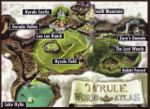

De: La Frikipedia, la enciclopedia extremadamente seria.
De: La Frikipedia, la enciclopedia extremadamente seria. De: La Frikipedia, la enciclopedia extremadamente seria.
| De la serie Países del planeta tierra: | |||||
| Hyrule | |||||
|---|---|---|---|---|---|
| |||||
| Lema: ¿Cuando toca el siguiente golpe de Estado? | |||||
| Himno: Tema principal de The Legend of Zelda
| |||||
| 
| |||||
| Capital | El Castillo | ||||
| Mayor ciudad | El Castillo | ||||
| Lenguas oficiales | Goron, Zora, Hylian... pero todo se puede traducir al ingles y subtitularse en Español con cierta facilidad. | ||||
| Gobierno | Dictadura y Monarquía , depediendo si es el principio o el final | ||||
| Rey (Aunque todavia no le vimos el pelo) | Alguien | ||||
| Área | Cartuchos de Noentiendo | ||||
| Población | 100 y redondeando al alza | ||||
| Moneda | Rupia, que las puedes encontrar por ahi tiradas o rompiendo jarrones delante de los guardias sin ningun tipo de multa. (Nos llevan años de ventaja) | ||||
| Zona horaria | ¿¿Reloj?? Que va. Ahi gastan piedras parlantes que te dicen la hora | ||||
| Dominio Internet | ¿Internet?, ¿Que coño es eso de internet? | ||||
| Código telefónico | LIIIIIIIIINK!!!! (A grito pelao)
| ||||
| Cualquiera se puede colar en el castillo | |||||
Hyrule es un mundo creado por Alguien en sus sueños en el que él mismo mando a las diosas que lo crearan o si no les castigaria con una racion de sadomasoquismo, cosa que las asustó demasiado y se pusieron manos a la obra, despues Noentiendo creo un videojuego basado en la historia moderna de Hyrule y lo llamo The Legend of Zelda).
En un principio alguien estaba de resaca. Mientras dormia la mona intentando pensar lo minimo en el dolor de cabeza que tenia ordeno a tres diosas que hicieran un mundo nuevo en algun lugar desconocido para nosotros. Asi se comenzo a fraguar el comienzo de Hyrule. Las diosas comenzaron a currar, repartiendose el curro echandolo a suertes mediante el metodo mas cientifico conocido: El "Piedra, Papel o Tijera". Tras la division de tareas se pusieron al tajo (con sus correspondientes paradas para la hora del bocata) y, despues de varios milenios nacio Hyrule. Cada una de las diosas y alguien crearon una raza propia:
Y patada giratoria juntandolas y formando el "Triforce", acabando asi con su resaca. Tras la creacion se dejo a todas las razas a su libre albedrio. Estas razas no han evolucionado mucho desde su creacion.
El clima es raro de cojones. Hay dos tipos de meterologia: O llueve o hace sol. Eso si, llueva a mares o haga un sol que se caigan los pajaros. todo el mundo ira con su tipico traje de manga corta. Ademas ya sea pleno invierno y estemos en la montaña mas alta de todo Hyrule, si empieza a llover NUNCA nevara. El Instituto Hyrulense de Meterologia esta formado por un mono con una moneda]: si sale cara; llueve. Si sale cruz; no llueve. En la zona norte hay un volcan que SOLO entra en erupcion cuando alparagatas nuevas, sigue pululando por la zona a escondidas del rey.
Pasemos a conocer la forma de gobierno de Hyrule. El gobierno de Hyrule se puede dividir en tres fases, coincidiendo con el inicio, desarrollo y final del juego respectivamente. Cabe destacar la facilidad de entrada en el castillo, ya sea por niños de 10 años armados con un cuchillo y un escudo de madera, como por un maromo con cara verde y una pinta de cabron del quince. Analizaremos la forma de gobierno dependiendo de la fase en la que nos encontremos:
En esta fase todo va perfectamente. Los niños juegan a correr detras de los perros (una y otra vez), la peña compra en el mercado animadamente... y un niño con un cuchillo aparece por ahi diciendo unicamente gritos del tipo Kiaaaaa. Las calles estan limpias, hay una colgada que te regala una gallina... todas las cosas que suelen ocurrir en la vida normal en un reino feliz (tipo el mundo de Pin y Pon). Claro que esto no va a durar mucho... un tipo sin duchar, sin afeitarse y demas se quiere adueñar del lugar. Lo peor es que lo consigue. En cuanto toma el castillo se puede comprobar el sentido de la frase "Eres mas lento que el caballo del malo", ya que aparece un caballo blanco pasando al lado tuyo como un imbecil)
Ganon toma el castillo y lo primero que hace es soltar un cuesco del quince. Con ello hace un buen agujero entre el castillo y el resto del pequeño pueblo. Luego el muy capullo cambia toda la decoracion al padre de reina le va a dar una de tollinas!!. Tras un sueño de 7 años (tanto kiaaa deja a uno el cuerpo destrozado), Link se despierta. Se encuentra con un notas que le obliga a hacer cosas "raras" como buscar ganchos, martillos, hablar con unos a los que llaman "Sabios". Pues Link se pone a buscar a los sabios para rescatar a Zelda y llevarsela al huerto (que os creiais, ¿que lo hacia para restaurar la paz?. Cuando llega hasta Ganon y le mete la espada por el culo acaba con la tirania de Ganon y rescata a Zelda.
Ganon muere y lo mandan a un sitio donde no podra salir en su vida donde lo unico que puede hacer para pasar el tiempo es ver una y otra vez todos los videos y temas musicales de "El canto del loco". Se suicida a los 2 segundos de cancion. Al final Zelda le da las gracias a Link por ayudarla a salvar su reino y demas pero... LE DA CALABAZAS. Tras ello Link se sume en una profunda depresion que le llevara a tocar en un grupo de reggaeton conocido como "Link moving the peña" siendo poco despues matado lenta y dolorosamente por el crimen que hizo. No queda nada del heroe que fue. Todo vuelve al estado de la Fase 1.
Hyrule esta dividido en varias provincias. En cada provincia habitan seres con diferentes costumbres, formas, colores, tamaños y sabores. Entre estas zonas podemos destacar las que nombramos a continuacion:
Consiste en una plaza, un castillo y una muralla. Viven cuatro amargados que cuando Ganon domina Hyrule se convierten en zombis con muy mala leche. Es la capital del reino y (en teoria) una de las ciudades mas pobladas de Hyrule. Aqui vive pueblerinos. Cabe destacar la altisima seguridad de su castillo, con una enredadera para colarse y cuatro guardias atontaos que pasas por encima de ellos pegando un monton de gritos y no se enteran de nada. En esta zona la droga esta permitida y los guardias son sus principales consumidores. Si quieres entrar en la plaza acuerdate que en cuanto oscurece (que tarda cosa de 5 o 6 segundos)tienes que estar dentro o sino te vas a pasar la noche peleando contra esqueletos.
Es una zona de chavolas que estan a pocos metros del castillo. En este pueblo hay una tia que tiene gallinas pero es alergica a ellas (solo los inteligentes pueden hacer cosas como estas), hay un cementerio donde estan enterrados toda la poblacion de la vecindad y un molino con un colgao tocando un instrumento mas raro que su madre. La barriada chavolista fue la capital de la resistencia contra Ganon en la fase de la Dictadura. A tener en cuenta es el "Soldado Reloj" (como lo lees) que te dice la hora exacta.
Es un volcan activo en el que te tienes que colar para encontrar a un notas que se metio dentro porque dice que tiene frio, que resulta ser primo del sobrino del hermano de tu padre. A pesar de ser el punto mas elevado de Hyrule no nieva bajo ninguna circunstancia (vease el apartado del clima de Hyrule para mas informacion).Aqui viven unos seres mas feos que los pies de otro llamados Gorons.Son poco sociables y tienen pinta de Buda obeso.
NOTA:La montaña de la muerte no tiene absolutamente nada que ver con Estrella de la Muerte de Star Wars. Toda similitud entre ambas es pura coincidencia ja, ni de coña. No se les ocurria nada mejor Este texto ha sido tachado voluntariamente, los historiadores de Hyrule nunca me amenazaron de muerte
Probablemente lleguemos a la zona mas rara de todo Hyrule. Los bichejos que teneis en la foto de la izquierda son de lo mas raro, raro, raro...Esta provincia tiene una especie de rey propio que es una mezcla entre cachalote, hipopotamo y Falete y una hija que segun dicen los habitantes del lugar es la Angelina Jolie de la zona. Tienen pasion por el hagua y no acaban arrugados enteros como nosotros cuando nos metemos en el hagua. Tambien tienen su propia religion: Una ballena que come pescado y al tio que se lo echa, pero tranquilo, asegurate de llevar dentro: un cuchillo, un escudo de madera, un tirachilas, unos palos de madera y demas paridas varias. Seguro que asi sales con vida.
Tipico bosque donde viven unos parientes cercanos de los hobbits, solo que estos tienen el pelo verde, ropa verde, mocos verdes... No crecen mas de la altura de un niño. Su Dios es una especie de arbol come niños que se comen a los que se dedican a abusar de las nenas. Es donde se cria Link, siendo el terror de las nenas por su rubia cabellera. En este bosque le regalan una ocarina (aunque el queria una guitarra electrica para tocar Dazed and Confused de Led Zeppelin) y, como no tiene tampoco mucho que hacer se dedica a abrasarnos los oidos deleitarnos con sus estupendas canciones. Ademas tocaba a tiempo parcial en la banda del bosque haciendo unos solos de ocarina dejando a todo el bosque con la boca abierta
El lago Hylia es el tipico sitio donde va gente de todo Hyrule a quitarse la guapos y elegantes van una vez al [[año]. Tambien hay un pequeño estanque para pescar escudo de hierro que compra cuando es mayor
En esta zona solo viven salido sexual, pero estas mujeres no son como creeis que son. Son mujeres guerreras y el unico hombre en su vida es Ganon, es decir, que Ganon es todo un sex simbol dentro de esta zona. Esta zona tambien es caracteristica por sus cascadas, que terminan en el lago Hylia. Desde aqui Link se dedica a hacer el salto del angel para pasar el tiempo. El resto de la zona es un desierto interminable con un templo en su centro donde descubres un monton de bichos y aprendes el verdadero significado de la palabra calor, aunque Link nunca se quitara la chaqueta, antes muerto.
Este pequeño punto del centro de Hyrule es el equivalente en nuestro mundo a un circuito de Formula 1. Link se pone los guantes, no se quita su traje y se monta en un caballo y corre en el circuito ganando a todo imbecil que se ponga por delante. Aqui demuestra toda su agresividad y ansias de ganar. Como circuito deja un poco que desear, ya que es una elipse. Como premio por ganar una carrera amañanda recibe un caballo para poder desplazarse a toda ostia por Hyrule. Aqui conoce a su primer gran amor, una pit baby con la que no hara absolutamente nada. Teorias recientes probadas por cientificos de Hyrule afirman que Link es zoofilico o gay.
En Hyrule reniegan de todas las religiones del mundo conocido. Ni pastafarismo, ni satanismo, ni cristianismo ni la madre que lo pario. Su religion se basa en lo que digan tres notas que en realidad son solo uno: el triforce. Despues de la patada giratoria a las diosas por parte de Alguien, las diosas se unieron para gobernar Hyrule en el nombre de Alguien. Llevan largos años haciendolo. Lo unico que dejaron en Hyrule fueron tres piedras para abrir una sala donde conseguir una espada que es la repera, pero, esa espada solo la puede conseguir el mas borracho del lugar, asi que quien quiera poseer la espada tiene que superar una prueba: bebe 21 litros de calimocho, 42 de cerveza, 12 chupitos de tequila y un chupito de agua. Solo Link lo consiguio, pero, como era demasiado joven estuvo de resaca 7 largos años en un mundo extraño donde todo se movia a camara lenta y volaba.
En Hyrule viven muchas personalidades muy conocidas. Ya sean heroes o villanos, Gays o heterosexuales, imbeciles o inteligentes.
Articulo principal Link
Link (o hipervínculo para los amigos) es un pequeño niño que un dia le da por coger un escudo de madera, unos palos y hacerse el heroe por Hyrule dejando atras su vocacion de campeon mundial de petanca. Es bastante ingenuo. Un día, un hada, Navidad, le despierta, le da una espada y un escudo, y le dice que vaya por ahí a matar cosas. De claras tendencias hembras) y con un vocabulario muy expresivo y variado, Link crece hasta convertirse en un muchacho exactamente igual de introvertido, con mucho tema de conversacion y con delirios de grandeza. Su principal enemigo es Ganondorf. Otros enemigos conocidos son las frases de mas de una palabra de largo. Sus frases favoritas son cualquier tipo de onomatopeya multiorgasmica. Tiene un préstamo para su escudo de hierro, una espada prestada, un gorro ridiculo, unas mallas verdes y un monton de trastos que utiliza como armas, ya sean una especie de semillas deslumbrantes/paralizantes o una especie de gancho. No sabemos si le da verguenza pasearse por todo Hyrule con esas pintas y no creo que consigamos nada preguntandoselo, ya que lo unico que te respondera sera un Kiaaaaaaa.
Zelda es la tia mas frigida de todo Hyrule y sus alrededores.Se cree la tia mas buena de todo Hyrule. Es la princesa del reino y pasa el tiempo en un jardin cantando canciones de La oreja de Van Gogh, dejando su jardin sin ningun tipo de vida. Es ka tia mas imbecil que puedes encontrar en todo Hyrule (asi que te recomiendo que no mantengas una conversacion con ella de mas de 5 minutos). Tiene fijacion por las laaaaargas conversaciones estupidas que no interesan ni vienen a cuento, contar sueños que no le importan ni a su padre (en el sentido literal), maquillarse como una cerda y intentarle tirarle los tejos a Jesus Vazquez. Es morena, pero se tiñe de rubio. Le da nombre a los princesa y nunca reinara.
Articulo principal Ganondorf
Ganondorf es el lider de una formacion heavy que versiona a grandes artistas de los 70 y 80. Pretende acabar con el reggaeton, el pop, la MTV y los 40 principales de Hyrule implantando asi la buena musica en esta tierra. Dicen que es el inventor de la "Ocarina electrica" y que se marca grandes solos en sus interpretaciones. Para muchos es un villano, pero para otros es un gran heroe. Es capaz de tirar un pedo y reventar medio castillo, meter unas tollinas del quince y de montar a caballo sin caer (Lo cual es uno de sus principales logros en vida). Su principal enemigo es Link, que por mucho que digan lo que queria era instaurar el reggaeton en Hyrule para la perdicion de todos sus habitantes.
Si has llegado aqui es posible que usted quiera hacer algo de turismo por el reino de Hyrule. Pues bien, esta mini guia le aconsejara sobre lugares, edificios y personajes a los que podra visitar con una breve descripcion de cada uno de ellos. Suponemos que usted acaba de llegar gracias al Hyrulerail (Tren invisible que comunica Hyrule con el resto de los reinos vecinos), a Hyrule airlains (compañia de viajes por aire de Hyrule), o a la compañia de Taxis Ganon (famosa por sus estafas y robo a clientes).
Esto es todo lo mas importante que puedes ver por las tierras de Hyrule, no dudes en volver a visitarnos y recomendarnos.
Autor(es):